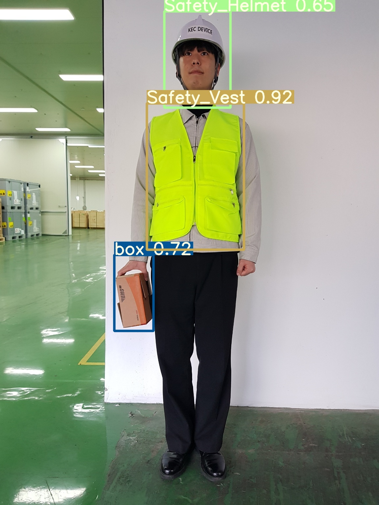

Worker Safety Equipment Detection Model
2024.01 - 2024.09
메타버스 환경 및 실제 물류 현장에서 작업자의 안전을 확보하기 위한 인공지능 모니터링 시스템 개발 프로젝트입니다. 작업자가 필수 안전 장비(헬멧, 조끼 등)를 올바르게 착용했는지를 실시간으로 판단하여 안전 사고를 예방하는 모델을 구축하였습니다.

95.42%
Detection Accuracy